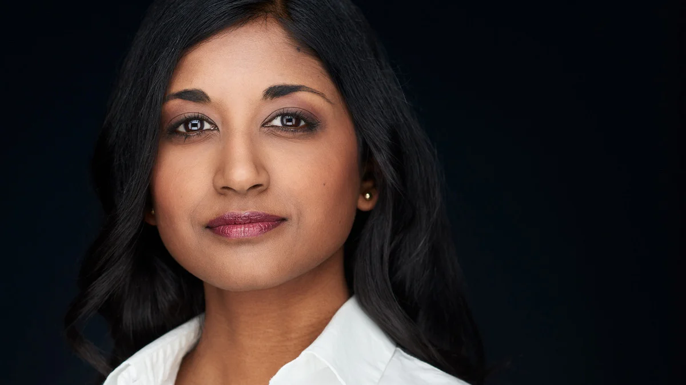

【BBC News 20250724 加沙大规模饥荒｜马修(老友记钱德勒扮演者)死亡案进展：医生的认罪｜华盛顿举行人工智能峰会】
Summary: The BBC reports on the growing humanitarian crisis in Gaza, where over 100 aid groups warn of mass starvation, especially among children. Israel denies responsibility, attributing shortages to Hamas. Aid distribution is hindered by border controls, safety concerns, and accusations of Israeli attacks on civilians seeking food. The report includes interviews with aid workers describing severe food scarcity and exorbitant prices. Meanwhile, political news covers Trump’s alleged links to Epstein, an AI policy summit in Washington, and a UN ruling allowing climate-vulnerable countries to sue for environmental damages. A doctor also pleads guilty in connection to Matthew Perry’s ketamine-related death.
摘要： BBC报道了加沙日益严重的人道主义危机，超过一百个援助组织警告称，加沙正在爆发大规模饥荒，儿童尤为受影响。以色列否认对此负责，称物资短缺是哈马斯所致。边境管控、安全问题以及以色列军方被指攻击前往领取援助物资的平民，使得援助物资难以分发。援助人员表示，加沙食品极度短缺，价格高得离谱。同时，节目还报道了特朗普与爱泼斯坦之间的新关联、美国在华盛顿举行的人工智能政策峰会、以及联合国裁定气候脆弱国家有权就环境破坏起诉其他国家。此外，还有一名医生因非法提供氯胺酮导致演员马修·派瑞死亡而认罪。

⏱️ Estimated Reading Time: 37 min.
📚 四级生词 📚 六级生词 📚 雅思生词 📚 托福生词 📚 专八生词 📚 SAT生词 📚 考研生词 📚 GRE生词 📚 高考生词 📚 其它生词
Live from Washington, this is BBC News.
这里是BBC新闻，华盛顿现场直播。
A hundred eight groups warn of mass starvation across Gaza.
108个组织警告加沙各地大规模饥荒。
With the red crossing, children's lives are hanging by a threat.
在红色通道附近，儿童的生命岌岌可危。
Israel denies causing widespread hunger.
以色列否认导致广泛饥饿。
The Wall Street Journal publishes another report linking Donald Trump to Jeffrey Epstein which the White House says is nothing more than a continuation of fake news.
《华尔街日报》发布另一份将特朗普与杰弗里·爱泼斯坦联系起来的报道，白宫称这只是假新闻的延续。
And the doctor who supplied Hollywood star Matthew Perry with ketamine pleads guilty.
为好莱坞明星马修·佩里提供氯胺酮的医生认罪。
MUSIC I'm Sue Meishal Maskanda.
音乐 我是苏·梅沙尔·马斯坎达。
Thank you for joining us.
感谢您的收看。
We begin tonight with the latest from Gaza, where the Hamas-run Health Ministry reports more than a dozen deaths, including children from starvation in the past 24 hours alone.
今晚我们首先关注加沙最新情况，哈马斯管理的卫生部报告过去24小时内已有十余人死于饥饿，包括儿童。
The International Rescue Committee detailed those children facing malnutrition saying their small bodies are shutting down.
国际救援委员会详细描述了面临营养不良的儿童，称他们瘦弱的身体正在衰竭。
They can't breathe.
他们无法呼吸。
Their immune systems are collapsing and they are highly vulnerable to infection.
他们的免疫系统崩溃，极易感染。
Their lives are hanging by a threat.
他们的生命悬于一线。
Israel which controls all border crossings in Gaza, rejected claims of famine, saying any age shortage is quote engineered by Hamas.
控制加沙所有边境的以色列否认饥荒指控，称任何物资短缺都是哈马斯“策划的”。
Separately, Israeli air strikes killed at least 17 people, including four children and an infant in Gaza City on Wednesday morning, as he is really offensive against Hamas presses on.
另据报道，周三早晨以色列空袭加沙城造成至少17人死亡，包括4名儿童和1名婴儿，以军对哈马斯的攻势持续。
Amid these warnings, BBC verifies been looking at those facing starvation in the territory and sent this report.
在这些警告中，BBC核实了该地区面临饥饿的人群并发布此报道。
More than a hundred aid agencies have sounded the alarm saying mass starvation is spreading across Gaza.
超百家援助机构拉响警报，称大规模饥荒正在加沙蔓延。
They say that Israel isn't allowing food already inside the strip to be distributed.
他们称以色列不允许加沙地带现有食物分发。
They're privately run Gaza Humanitarian Foundation backed by Israel and the US bypasses the UN's operations.
由以色列和美国支持的私营机构“加沙人道基金会”绕过联合国开展行动。
Palestinians have to travel to aid sites to get food.
巴勒斯坦人需前往援助站点获取食物。
Have a look at this chart.
请看这张图表。
You can see the number of boxes distributed roughly peaked around mid-June but then appears to have decreased over the past month with an increase in the past few days.
分发箱数在六月中旬达到峰值，之后一月内下降，近日略有回升。
The GHF posted photos like this online which gives us an insight into what's being distributed.
加沙人道基金会发布的在线照片揭示了分发内容。
You can see it's mostly dried goods like lentils and pasta.
主要为扁豆、意面等干货。
The GHF says each box has enough food to feed between five and six people for three and a half days.
基金会称每箱食物可供5-6人维持3.5天。
They provided us with a chart of what they describe as a benchmark box with nutritional values.
他们提供了标有营养值的基准箱图表。
The calorie content of each box works out to around 42,500 calories.
每箱热量约42,500卡路里。
It's worth saying it says ten grams here but we suspect they mean ten kilograms.
标注为10克，但疑为10千克。
Now that roughly aligns with emergency nutrition standards which recommend about 2,100 calories per person per day according to the UN.
这基本符合联合国紧急营养标准（人均每日2100卡路里）。
It's also worth saying that one of the main reasons the GHF took over aid distribution was because Israel said aid was getting into the hands of Hamas but this new GHF system doesn't have any checks on who aid is being distributed too.
需指出，以色列称援助物资落入哈马斯之手是基金会接管分发的主因，但新系统未核查受助人身份。
Israel has repeatedly denied allegations of mass starvation in Gaza and categorically rejected the statement from these aid agencies.
以色列多次否认加沙饥荒指控，断然拒绝援助机构声明。
Israeli body for aid coordination posted this video online saying 950 trucks of aid currently waiting in Gaza to be picked up but this doesn't tell the full story.
以色列援助协调机构发布视频称950辆援助卡车待分发，但未反映全貌。
A trucks can't move inside Gaza without permission by Israeli authorities because they need to move along prescribed routes for safety.
卡车需经以方批准按指定路线行驶。
The UN and other aid agencies have said that they struggle to get this Israeli authorization.
联合国等机构称难以获得以方授权。
They say this is one of the main obstacles to distributing aid but even once it's inside there's another hurdle.
这构成主要障碍，且物资进入后仍有阻碍。
The Israeli army has repeatedly been accused of firing on Palestinians while they're trying to access aid and this maintaining the safety of Palestinians trying to access aid is key for aid agencies.
以军多次被指控向领取物资的巴勒斯坦人开火，保障其安全是援助机构核心诉求。
The UN said that in too many cases civilians approaching these trucks come under fire despite repeated assurances that troops wouldn't engage or be present and they said quote absolutely no one should have to risk their lives to get food.
联合国称尽管多次保证，平民仍屡遭袭击，强调“无人应冒生命危险获取食物”。
But for Palestinians accessing aid remains fraught and with starvation looming the urgency grows by the day.
巴勒斯坦人获取援助危机四伏，饥荒逼近使紧迫性与日俱增。
For more on the humanitarian crisis in Gaza I spoke with Honey Amadou and philanthropy director at ANWA USA.
关于加沙人道危机，我采访了ANWA USA慈善总监霍尼·阿马杜。
You and your late brother opened the Gaza soup kitchen in December of 2023 to help provide aid food aid in Gaza.
您与已故兄弟于2023年12月开设加沙施粥所。
I understand you've been telling us that you have had to downsize your operation significantly because as you're reporting a lack of food tell us about what's been happening.
据悉您因食物短缺大幅缩减规模，请详述现状。
Well thank you for having me obviously we struggle finding food in Gaza to cook for people.
感谢邀请，我们在加沙难以为民众找到食物。
We have about 10 kitchens in Gaza and we have to close five because we can't find in a food.
原有10间厨房，现关闭5间。
The little food we can have a bit of flintels maybe some white beans maybe some pasta here and there but not enough to keep people to start to keep people alive.
仅有少量扁豆、白豆和意面，远不足维持生命。
It is a real deal food is very expensive and there be an intentional starved by Israel.
食物价格极高，以色列蓄意制造饥荒。
This is a fact and we struggle to get food to people.
我们难以向民众提供食物。
In fact, this is a twofold attack against doctors.
事实上，这对医生来说是双重打击。
As your report showed, the doctors are busy because they get to treat a lot of Palestinians.
正如你们的报道所示，医生非常忙，因为他们要治疗大量的巴勒斯坦人。
The Israeli army is busy hurting a lot of Palestinians.
以色列军队在不断伤害大量巴勒斯坦人。
And two, the doctors themselves are not eating, and that causes a lot of stress.
其次，医生们自己也没有进食，这给他们带来了巨大的压力。
In fact, my uncle, who is a physician, told me people no longer come to see him
事实上，我的叔叔是一名医生，他告诉我，现在人们已经不来看病了，
because they want to preserve their energy — they have no energy left to walk about a mile or two to see the doctor.
因为他们想保存体力——他们已经没有力气再走一两英里去看医生了。
And the worst part is, this is fictitious — this is engineered suffering in Gaza we're watching unfold.
而最糟糕的是，这一切并非天灾，而是人为制造的苦难，我们正目睹加沙这种有意造成的痛苦展开。
So can you give us a sense when you say food is too expensive that food that is available how expensive are we talking about give our viewers a sense of how difficult it is to purchase the food that is available.
那么，当你说食物太贵时，你能具体说明一下有多贵吗？让我们的观众了解购买现有食物有多困难。
So a kilo of flour usually in the US for a dollar in Gaza fictitious about 50 dollars one kilo of flour that's one example.
在美国一公斤面粉通常售价1美元，而在加沙却高达50美元，这只是其中一个例子。
Sugar is a hundred dollar if you have a pumpkin that when we pay three dollars for here in the US is fifty dollars.
糖的价格是100美元，一个南瓜在美国卖3美元，在加沙却要50美元。
We're talking about there is no cooking oil a bottle of cooking oil you buy at the local grocery store for three bucks this is about twenty five to thirty dollars each and it's hard because you cannot really cook at your home there is no gas and then you have to go fetch wood find clean water life is a challenge.
我们谈论的是没有食用油的情况，本地超市里3美元一瓶的食用油在加沙要25到30美元，而且由于没有燃气，人们无法在家做饭，只能去捡柴火、寻找干净的水源，生活极其艰难。
And you know I just want to talk about Gaza as in the coast and Israelis are not even allowing the fishermen to go fish in Gaza so this is there is no militants in the water people can fish and bring it home and cook and keep families alive that's not happening.
我想谈谈加沙的海岸，以色列甚至不允许渔民在加沙捕鱼，尽管水里没有武装分子，人们本可以捕鱼养家，但这却无法实现。
And in fact today I watch a video of there is a Israeli's detaining to fishermen near Hanyunis and that's the gift of nature for Gaza we have the coast and we're not allowed to fish somebody wants to hold me the Palestinians are not they're supposed to farm without land and fish without water and that's the situation in Gaza.
事实上，今天我看到一个视频，以色列在汗尤尼斯附近扣押渔民，加沙拥有海岸这一自然馈赠，却不被允许捕鱼，巴勒斯坦人既无地可耕，也无水可渔，这就是加沙的现状。
And get what there's six thousand eight trucks for under one you and our w s six thousand eight trucks about the kilo outside of Gaza borders and there been denied entry by the F why they have many reasons they have many fabrications but they're really good allegations they're never good about evidence.
要知道，有6800辆卡车载着物资停在加沙边境外，却被以方拒绝进入，他们有很多理由和捏造的借口，但指控虽多，却缺乏证据。
So when it comes to Israeli token points you feel the allegations are good enough to be an evidence but that's far fits in our this is not we mentioned just before the report that israel says that Hamas is manufacturing a hunger crisis and that there are hundreds of eight trucks inside Gaza and that that aid can't be distributed because Hamas militants are getting in the way.
在以色列的检查站，你会觉得他们的指控似乎足以作为证据，但这远非事实。正如报道前所述，以色列声称哈马斯制造了饥饿危机，并称有数百辆援助卡车在加沙境内因哈马斯武装分子阻挠而无法分发。
I mean where does all of this leave civilians obviously because we are seeing this letter from aid agencies more than a hundred agents he's saying that people are starving literally wasting away yeah I mean look there's Israelis who have you believe these UN agencies are the bad guys and they and their mercenary friends they fly from Wyoming and North Carolina are the good guys they're intentionally you're talking about those Gaza humanitarian foundation which is a very debolical plan and people are being starved and people try to find food and when they go to these aid sites more than a thousand Palestinians were killed this is this is tragedy because people want a bag of flour they're not numbers they're not AI some of these people I know and my friends in the last couple of days when I'm saying as these UN agencies and also American agencies that are big and they have the scale to do this they're being stopped from delivered the word central kitchen close in Gaza that's not a UN agency there really been a love with Israel and the Israelis killed their staff and now they're not allowing me to bring food look desperate conditions in Gaza is real people grab food but guess what look at February this this year there was no looting why people loot food when it's scarce and it's expensive you can argue yes when you are you can argue that the Israeli is banning food the restricting food from getting to Gaza is benefiting the bad actors who's going to go fight for a bag of flour when you could buy it for a dollar it is now a thousand dollars that's why it becomes a commodity because it's scarce after some other news the third round of peace talks between Russia and Ukraine in Istanbul ended without a breakthrough and the streets of Ukraine meanwhile they're seeing the biggest protest since Russia's full-scale invasion began more than three years ago these protests were sparked by President Bolotomir Zelensky's decision to sign sweeping legislation but critics say weakened the independence of Ukraine's anti-corruption watchdog.
这一切显然让平民陷入绝境，因为我们看到一百多家援助机构的联名信称人们正在饿死。以色列试图让你相信联合国机构是坏人，而他们从怀俄明和北卡罗来纳州飞来的雇佣兵朋友才是好人。加沙人道主义基金会是一个邪恶计划，人们正在挨饿，当他们前往援助站点时，超过一千名巴勒斯坦人被杀。这不是数字，不是AI，这些人中有我认识的朋友。联合国和美国大型援助机构被阻止运送物资，世界中央厨房（非联合国机构）因与以色列关系密切，其工作人员被以军杀害，现在他们也不被允许运送食物。加沙的绝望是真实的，人们抢夺食物，但今年二月却没有发生哄抢——物资稀缺昂贵时才会发生。可以争论以色列禁运食物助长了恶劣行为，当一袋面粉从1美元涨到1000美元，它就成为了稀缺商品。另据报道，俄乌在伊斯坦布尔的第三轮和谈未取得突破，同时乌克兰街头爆发了三年多来最大规模抗议，导火索是泽连斯基总统签署削弱反腐机构独立性的法案。
Mr. Zelensky posted on social media Wednesday that he had heard their concerns but detractors feared could signal the country's backslide into its fraught history of corruption as well as provide the Kremlin in opening to sell further seeds of propaganda and mistrust and there was concern that the protests could cast a shadow on those peace talks we mentioned while the BBC's correspondent Vitaly Shepchenko filed this report on the results of those talks.
泽连斯基周三在社交媒体回应称听到了民众诉求，但批评者担忧这可能让乌克兰重回腐败历史，并为克里姆林宫提供散布不信任 propaganda 的契机。抗议可能影响和谈进程。BBC记者Vitaly Shepchenko报道称：
The Russian said that they discussed humanitarian issues such as further exchanges of prisoners and it was too early to hold a meeting between the two presidents.
俄方表示讨论了人道主义议题如继续交换战俘，但称两国总统会晤为时尚早。
What was absent from their news conferences was any indication that progress has been made on the key fundamental differences persisting between the two countries.
新闻发布会未透露双方在关键分歧上取得进展。
Around the world and across the UK, this is BBC News. Your live with BBC News.
这里是BBC新闻，全球播报。
The US House Oversight Committee has subpoenaed Glein Maxwell, a longtime associate of the late sex offender Jeffrey Amstie.
美国众议院监督委员会已传唤已故性犯罪者爱泼斯坦的长期合伙人吉斯莱恩·麦克斯韦。
The committee set a deposition for August 11th at the Florida prison where she's serving a 20-year sentence for sex trafficking and other crimes.
委员会要求她8月11日在佛罗里达监狱作证，她因性交易等罪名正在服20年刑期。
Meanwhile, US media report that President Trump's attorney general told him months ago that his name is listed in the Epstein files along with other high profile figures.
同时美媒报道，特朗普的司法部长数月前告知他其名字与其他知名人物一同出现在爱泼斯坦文件中。
In response to those reports, President Trump's communications director Steven Chung said, quote, the fact is that the president kicked him out of his club for being a creep.
特朗普通讯主管Steven Chung回应称："事实是总统因爱泼斯坦行为不端将其逐出俱乐部。"
This is nothing more than a continuation of the fake news stories concocted by the Democrats and the liberal media just like the Obama-Russia gate scandal which President Trump was right about.
这只是民主党与自由派媒体捏造假新闻的延续，如同'通俄门'闹剧，而特朗普总统当时就是正确的。
And separately on Wednesday, director of National Intelligence, Tulsi Gabbard made a surprise appearance at the White House press briefing.
周三，国家情报总监图尔西·加巴德意外现身白宫简报会。
She outlined key findings from an intelligence report.
她概述了一份情报报告的关键结论。
She alleges shows that the Obama administration manipulated information about Russian efforts to sway the 2016 election in Donald Trump's favor.
她指控奥巴马政府操纵了关于俄罗斯干预2016年大选使特朗普受益的信息。
That is an allegation that the former president has vehemently denied.
这一指控遭前总统奥巴马强烈否认。
Here's Gabbard's response when a CBS reporter asked her what was new in this assessment.
当CBS记者询问该评估的新内容时，加巴德回应：
What do you now have that refutes those two? I will encourage you, and my role as the director of National Intelligence.
"我以国家情报总监的身份鼓励你们..."
My job again, as I said when I came into this role, was to make sure that we are telling the truth to the American people and that we are ensuring that the intelligence community is not being politicized.
"我的职责是确保向美国人民传达真相，并保证情报界不被政治化。"
The vice chair of the Senate Intelligence Committee condemned the release of the report as partisan and irresponsible Senator Mark Warner said Tulsi Gabbard's decision could expose classified sources, the Treyar allies, and politicize the very intelligence she has been entrusted to protect.
参议院情报委员会副主席马克·华纳谴责报告发布具有党派性且不负责任，称加巴德的决定可能泄露机密信源、危及盟友，并将她本应保护的情报政治化。
Trade representatives from the European Union are in talks with the U.S. to avert a 30 percent tariff rate that President Trump has threatened to impose on EU goods starting August 1.
欧盟贸易代表正与美方谈判，试图避免特朗普威胁自8月1日起对欧盟商品征收30%关税。
The latest negotiations come after the U.S. and Japan reached a tariff deal late on Tuesday.
此次谈判前，美日于周二晚间达成关税协议。
U.S. President Trump said that Japan will invest $550 billion in the U.S.
特朗普称日本将在美投资5500亿美元。
In turn, Japanese goods sold to the U.S. will be taxed at 15 percent below the 25 percent tariff that Trump had initially threatened.
作为交换，日本输美商品关税将降至15%，低于最初威胁的25%。
Several EU diplomats have reportedly said that the block is now examining U.S. proposals for a 15 percent baseline tariff.
据称多名欧盟外交官表示，欧盟正在评估美方提出的15%基准关税方案。
The European Commission, that's the EU's executive body, says that if no deal is reached, it will place counter tariffs on more than $100 billion worth of U.S. goods starting August 7.
欧盟委员会表示若未达成协议，将自8月7日起对超千亿美元美国商品加征报复性关税。
A landmark decision by the U.N.'s top court has cleared the way for countries to sue other nations that fail to meet climate targets.
联合国最高法院里程碑式裁决为各国起诉未达气候目标的国家铺平道路。
The International Court of Justice ruled that developing nations have a right to seek damages for the impacts of climate change, like destroyed buildings and infrastructure.
国际法院裁定发展中国家有权就气候变化影响（如建筑和基础设施损毁）索赔。
The court ruled that a clean, healthy, and sustainable environment is a human right, telling wealthy countries that they must comply with their international commitments to lower pollution or risk having to pay compensation.
法院认定清洁、健康、可持续的环境是人权，要求富裕国家履行减排承诺否则面临赔偿。
Wealthier industrialized nations disagreed with that premise, but the ruling is being seen as a victory for countries most vulnerable to climate change.
富裕工业国不认同该前提，但裁决被视为最易受气候变化影响国家的胜利。
Although the ICJ says its adviser opinions are not binding, the BBC understands it could pave the way for future litigation.
尽管国际法院称其咨询意见无约束力，但BBC认为这可能为未来诉讼奠定基础。
This case began quite literally on the other side of the earth.
此案始于地球另一端的太平洋岛国瓦努阿图法学院学生的构想。
It was the brainchild of law students at a university in the Pacific Island nation of Vanuatu.
六年后，海牙国际法院作出历史性裁决。
Six years later and in a landmark decision, the International Court of Justice here in the Hague cleared the way for countries to sue each other over climate damage.
该裁决为各国就气候损害相互起诉扫清障碍。
Clarity for them is a base where we can stand and more considered global action can go, and the fight is not ending here.
"明确性是我们立足的基础，推动更审慎的全球行动，斗争不会止步于此。"
This is just the beginning of something new.
"这只是新篇章的开始。"
So what did what is considered to be the world's highest court have to say?
这个被视为世界最高法庭的机构具体说了什么？
It rejected the argument made by some richer countries that their commitments to existing international climate agreements were sufficient and stressed the duty of all countries to prevent significant harm to the environment.
它驳斥了富国关于现有气候承诺已足够的论点，强调各国有责任防止重大环境损害。
It said countries were also responsible for the actions of private companies and individuals under their jurisdiction.
法院称国家对管辖范围内的私企和个人行为同样负有责任。
For example, the impact of the emissions from the production of oil and gas failure to meet any of these responsibilities could result in legal action the court warned, potentially including financial compensation to other countries for the damage caused by climate impacts.
例如油气生产排放的影响，未尽责任可能引发法律诉讼，包括向受气候损害国家赔偿。
But the court's opinion is not binding and it acknowledged that working out who caused climate impacts could prove very difficult.
但法院意见无强制力，且承认归因气候影响极为困难。
Nevertheless, some legal experts said it was a victory for climate vulnerable nations.
不过法律专家称这是气候脆弱国家的胜利。
It's a legal precedent that will be developed in litigation in lawsuits in domestic courts.
"这一法律先例将在国内法院诉讼中发展完善。"
It sets the beat for new legislation for action from governments and also from corporations that know their obligations and know what happens if those obligations are not met.
"它为政府新立法和企业履行义务设定基调，明确未尽责任的后果。"
The BBC understands the first case using the opinion could be brought as soon as next week.
BBC获悉首例援引该意见的案件可能下周就会提出。
Just in rolat, BBC News.
BBC新闻最新消息。
President Trump has been holding in AI summit here in Washington.
特朗普总统在华盛顿主持人工智能峰会。
He's been explaining the administration's new artificial intelligence blueprint that aims to loosen environmental rules for AI data centers and expand AI exports.
他阐述政府新AI蓝图，拟放宽AI数据中心环保规定并扩大AI出口。
The White House as a president will also sign several executive orders to promote quote global dominance in the AI race.
白宫称总统将签署多项行政令以促进"AI竞赛全球主导地位"。
Earlier I spoke with Owen Daniels, Associate Director of Analysis at the Center for Security and Emerging Technology.
此前我采访了安全与新兴技术中心分析副主任Owen Daniels。
First of all, what do you think of this action plan, the executive orders that the president is introducing?
"首先，您如何看待总统推出的这些行政令行动方案？"
We've seen criticism already that this is simply deregulating the industry.
"已有批评称这只是行业松绑。"
Yeah, hi, Simea. Thanks for having me.
"你好，感谢邀请。"
So looking at this from the perspective of an AI policy researcher, I think there are aspects of the action plan that many of us actually see as quite promising in terms of recommendations that we've previously made to the government.
"从AI政策研究者视角看，该计划有些方面符合我们向政府提出的建议，令人期待。"
So I think investing in the kind of open AI model ecosystem, which the US has not done to the extent that it might compare to countries like China is one kind of strength that we've seen in the plans so far.
"投资开放AI模型生态系统是美国此前不如中国的领域，现成为该计划的优势。"
Another is building an AI evaluation ecosystem, which I think many of us researchers recognize as being important for developing kind of control robustness in terms of the AI systems that the government tries to use.
"构建AI评估生态系统对政府所用系统的控制稳健性至关重要。"
And then finally, developing a workforce that's capable and ready for the challenges posed by AI as a major part of the action plan.
"最后，培养能应对AI挑战的人才也是计划重点。"
So I think from that perspective, those are bullet points that ring pretty true to AI policy researchers.
"这些要点对AI政策研究者而言切中要害。"
I think the major implementation here or the major challenge here rather is going to be implementation.
"主要挑战在于落实。"
AI policy doesn't happen without people.
"AI政策离不开人才。"
And I think you're seeing that science policy doesn't necessarily happen in a vacuum.
"科技政策需要现实基础。"
There are kind of tensions and trade-offs between cutting funding, personnel, research and government expertise.
"削减经费、人员、研究投入与政府专业能力之间存在矛盾。"
And so I think given that these are recommendations, we're going to have to see how the devil is in the details when it comes to the actual implementation.
因此，我认为既然这些是建议，我们必须看看实际执行中的细节问题。
What about the criticism from some AI experts who have said that this is again deregulating the industry to the benefit of big technology companies excuse me in the US.
一些AI专家批评称，这再次放松了对行业的监管，有利于美国的大型科技公司。
And yeah, and I think this is one of the areas where perhaps there's more continuity than we might expect.
是的，我认为这是其中一个可能比我们预期更具连续性的领域。
So in the US, most of the kind of executive branch policy over the past decade across both Democratic and Republican administrations has been geared towards developing voluntary standards for the biggest AI companies in order to kind of not stand in the way of innovation by implementing guardrails.
在美国，过去十年间，民主党和共和党政府的大部分行政政策都旨在为大型AI公司制定自愿标准，以避免通过实施护栏阻碍创新。
I think obviously rhetorically the administration has kind of adapted a very maximalist approach in talking about removing barriers to innovation.
显然，政府在言辞上采取了非常激进的方式，谈论消除创新障碍。
But I think there's actually quite a bit of continuity when it comes to not trying to impose on companies into harness innovation.
但我认为，在不试图强制公司驾驭创新方面，实际上存在相当多的连续性。
And again, like I think the rhetoric around some of the competition is perhaps higher than it was in the past, but there's probably a surprising amount of continuity to the casual observer.
再次，我认为围绕某些竞争的言辞可能比过去更高，但对于普通观察者来说，可能存在着惊人的连续性。
So the administration has also talked about a quote, woke bias in AI systems, something that they want to target.
因此，政府还谈到了所谓的AI系统中的“觉醒偏见”，这是他们想要解决的问题。
First of all, can a bias be detected in AI systems?
首先，AI系统中的偏见能否被检测到？
And are you worried about the regulation of that as regulation of speech?
你是否担心将其作为言论监管进行规范？
Yeah, so bias is one of the kind of longstanding challenges in the AI industry.
是的，偏见是AI行业长期面临的挑战之一。
AI models tend to produce results that are heavily linked to the data that they were trained on.
AI模型倾向于产生与其训练数据紧密相关的结果。
And so controlling bias has been our perpetual issue across AI developers.
因此，控制偏见一直是AI开发者面临的长期问题。
I think we don't want models that incorporate bias that's kind of politically oriented in either direction.
我认为我们不希望模型包含任何政治倾向的偏见。
I think the extent to which this administration is kind of used the language of woke makes this more of a political football.
我认为政府使用“觉醒”语言的程度使这一问题更加政治化。
Perhaps then we would ideally like it to be when it comes to the conversation of bias in AI models.
也许在讨论AI模型中的偏见时，我们更希望它是理想的。
But ideally, we'd like to try to eradicate bias and models the extent that we can and make sure that they're not politically influenced in either direction.
但理想情况下，我们希望尽可能消除模型中的偏见，并确保它们不受任何政治方向的影响。
A doctor in Los Angeles has pleaded guilty to four accounts of illegally distributing ketamine to the actor Matthew Perry, who was found dead at his home in October 2023, after accidentally overdosing on the drug.
洛杉矶一名医生对四项非法向演员马修·佩里分发氯胺酮的指控认罪，马修·佩里于2023年10月因意外过量服用该药物在家中去世。
Dr. Salvador Passencia is the fourth of five people charged in connection to the friend's star's death to plead guilty.
萨尔瓦多·帕森西亚医生是五名与这位《老友记》明星死亡有关的人员中第四位认罪的人。
Let's speak about this now with our correspondent Peter Bose is following the latest on this.
现在让我们与正在跟进最新消息的记者彼得·博斯谈谈此事。
Peter, it's good to see you.
彼得，很高兴见到你。
Tell us more about this guilty plea.
请告诉我们更多关于这次认罪的信息。
It was a short court appearance and in fact a change from his plea about a month ago, we learned that he'd reached a plea agreement with prosecutors in return for some of the charges that he was facing being dropped.
这是一次简短的法庭出庭，实际上与他大约一个月前的认罪态度有所改变，我们了解到他已与检察官达成认罪协议，以换取撤销部分指控。
Nevertheless, four charges, as you say, very serious charges of supplying Matthew Perry with ketamine in the months before he died.
尽管如此，正如你所说，四项指控非常严重，涉及在马修·佩里去世前几个月向他提供氯胺酮。
Now his lawyers have pointed out that he wasn't treating the actor when he died and that the ketamine he's applied wasn't directly responsible for his death.
现在他的律师指出，这位演员去世时他并未对其进行治疗，而且他所提供的氯胺酮并非直接导致其死亡的原因。
Nevertheless, ketamine is a substance that is normally used in a clinical situation as an anesthetic, sometimes used by people with anxiety or depression, but in the case of Matthew Perry, there was no medical justification.
尽管如此，氯胺酮通常作为一种麻醉剂在临床中使用，有时也被焦虑或抑郁症患者使用，但在马修·佩里的案例中，没有医学依据。
And Dr. Passencia is facing potentially ten years on each count.
帕森西亚医生每项指控可能面临十年监禁。
So when he's sentenced in December, potentially going to prison for up to 40 years.
因此，当他12月被判刑时，可能会面临长达40年的监禁。
We mentioned that he's the fourth of five people charged in connection with Matthew Perry's death.
我们提到他是五名与马修·佩里死亡有关的人员中第四位被指控的人。
What more do we know about how all of this came about?
关于这一切是如何发生的，我们还知道些什么？
Well, we know and it's kind of like piecing together a jigsaw when we hear about each individual case.
嗯，我们知道，当我们听到每个个案时，这有点像拼凑拼图。
And as you say, four people, including this doctor have now pleaded guilty, a fifth has pleaded not guilty, a woman known according to prosecutors in Hollywood as the ketamine queen.
正如你所说，包括这名医生在内的四人现已认罪，第五人拒不认罪，这名女性被好莱坞检察官称为“氯胺酮女王”。
And that is a trial that will go ahead next month.
此案将于下个月开庭审理。
But the bigger picture here is the damaging use of ketamine by people at home.
但更大的问题是人们在家中滥用氯胺酮的危害。
A problem in this city of Los Angeles, but indeed around the country and in a statement released by the lawyers of Dr. Passencia.
这是洛杉矶市的问题，实际上也是全国性的问题，帕森西亚律师在声明中也提到了这一点。
He alluded to this.
他暗示了这一点。
And I just quote you what he said.
我引用他的话。
He said he hopes that this case will serve as a warning to the medical professionals.
他说他希望此案能对医疗专业人员起到警示作用。
And he said lead to stricter oversight for the rapidly growing out home ketamine industry.
他还表示，这将导致对快速发展的家庭氯胺酮行业进行更严格的监管。
Okay, Peter Boes joining us from Los Angeles.
好的，彼得·博斯从洛杉矶加入我们。
Thank you so much for joining us tonight.
非常感谢你今晚的参与。
Now, a federal judge has ordered the release of Kilmar, Abu-Gha'r-Sea from detention while awaiting trial on smuggling charges.
现在，一名联邦法官下令在走私指控审判前释放基尔马尔·阿布-加尔-西。
It comes as a district judge issued a temporary restraining order that will prevent immigration enforcement agents from deporting him to a third country.
与此同时，一名地区法官发布了一项临时限制令，将阻止移民执法机构将他驱逐到第三国。
If proceedings for deportation to a third country are initiated, authorities must provide 72 hours notice to Abu-Gha'r-Sea and his lawyers to ensure he is given due process.
如果启动将其驱逐到第三国的程序，当局必须提前72小时通知阿布-加尔-西及其律师，以确保他获得正当程序。
All right, that is our program at this hour.
好的，这就是我们本期的节目。
But we just want to bring you the very latest.
但我们只想为您带来最新消息。
It's also on our website, BBC.com slash news.
您也可以在我们的网站BBC.com/news上查看。
We have seen more than 108 agencies as we have said who are warning that starvation is spreading in Gaza.
正如我们所说，已有超过108个机构警告称，加沙的饥饿问题正在蔓延。
As we know, those eight agencies have said that people are, quote, wasting away in Gaza.
我们知道，这八个机构表示，加沙的人们正在“消瘦”。
We should say Israel, which controls all of the entry of supplies into the territory, has rejected the statement from these organizations and accused them of serving the propaganda of Hamas.
我们应该指出，控制所有物资进入该地区的以色列拒绝了这些组织的声明，并指责他们为哈马斯的宣传服务。
But doctors with that order, save the children and Oxfam are among the signatories here saying that their colleagues and people they serve are starving and have no access to aid, to medical supplies and to food.
但签署该声明的包括“拯救儿童”和“乐施会”的医生，他们表示他们的同事和他们服务的人们正在挨饿，无法获得援助、医疗物资和食物。
We will, of course, continue to follow this story for you at the top of the next hour.
当然，我们将在下一小时继续为您跟进这一报道。
For all of us here in Washington, thank you so much for watching BBC News and do stay with us.
华盛顿的全体工作人员，非常感谢您收看BBC新闻，请继续关注我们。